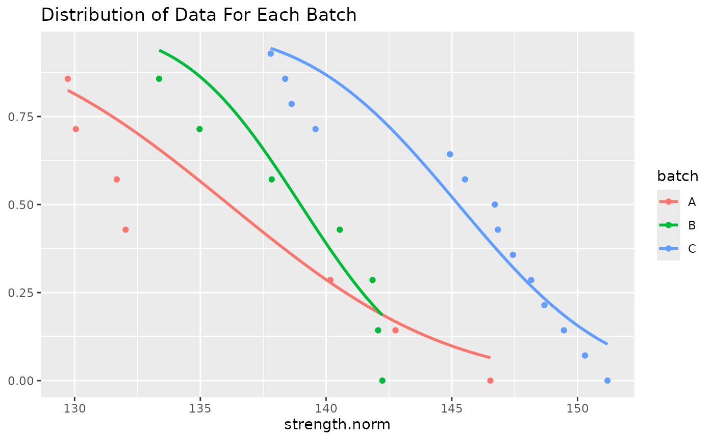

vignettes/cmstatr_Tutorial.Rmd
cmstatr_Tutorial.Rmdcmstatr is an R package for analyzing composite material data for use in the aerospace industry. The statistical methods are based on those published in CMH-17-1G. This package is intended to facilitate reproducible statistical analysis of composite materials. In this tutorial, we’ll explore the basic functionality of cmstatr.
Before we can actually use the package, we’ll need to load it. We’ll also load the dplyr package, which we’ll talk about shortly. There are also a few other packages that we’ll load. These could all be loaded by loading the tidyverse package instead.
cmstatr is built with the assumption that the data is in (so called) tidy data format. This means that the data is in a data frame and that each observation (i.e. test result) has its own row and that each variable has its own column. Included in this package is a sample composite material data set (this data set is fictional: don’t use it for anything other than learning this package). The data set carbon.fabric.2 has the expected format. We’ll just show the first 10 rows of the data for now.
carbon.fabric.2 %>% head(10) #> test condition batch thickness nplies strength modulus failure_mode #> 1 WT CTD A 0.112 14 142.817 9.285 LAT #> 2 WT CTD A 0.113 14 135.901 9.133 LAT #> 3 WT CTD A 0.113 14 132.511 9.253 LAT #> 4 WT CTD A 0.112 14 135.586 9.150 LAB #> 5 WT CTD A 0.113 14 125.145 9.270 LAB #> 6 WT CTD A 0.113 14 135.203 9.189 LGM #> 7 WT CTD A 0.113 14 128.547 9.088 LAB #> 8 WT CTD B 0.113 14 127.709 9.199 LGM #> 9 WT CTD B 0.113 14 127.074 9.058 LGM #> 10 WT CTD B 0.114 14 126.879 9.306 LGM
If your data set is not yet in this type of format (note: that the column names do not need to match the column names in the example), there are many ways to get it into this format. One of the easier ways of doing so is to use the tidyr package. The use of this package is outside the scope of this vignette.
Throughout this vignette, we will be using some of the tidyverse tools for working with data. There are several ways to work with data in R, but in the opinion of the author of this vignette, the tidyverse provides the easiest way to do so. As such, this is the approach used in this vignette. Feel free to use whichever approach works best for you.
Very often, you’ll want to normalize as-measured strength data to a nominal cured ply thickness for fiber-dominated properties. Very often, this will reduce the apparent variance in the data. The normalize_ply_thickness function can be used to normalize strength or modulus data to a certain cured ply thickness. This function takes three arguments: the value to normalize (i.e.. strength or modulus), the measured thickness and the nominal thickness. In our case, the nominal cured ply thickness of the material is \(0.0079\). We can then normalize the warp-tension and fill-compression data as follows:
norm_data <- carbon.fabric.2 %>% filter(test == "WT" | test == "FC") %>% mutate(strength.norm = normalize_ply_thickness(strength, thickness / nplies, 0.0079)) norm_data %>% head(10) #> test condition batch thickness nplies strength modulus failure_mode #> 1 WT CTD A 0.112 14 142.817 9.285 LAT #> 2 WT CTD A 0.113 14 135.901 9.133 LAT #> 3 WT CTD A 0.113 14 132.511 9.253 LAT #> 4 WT CTD A 0.112 14 135.586 9.150 LAB #> 5 WT CTD A 0.113 14 125.145 9.270 LAB #> 6 WT CTD A 0.113 14 135.203 9.189 LGM #> 7 WT CTD A 0.113 14 128.547 9.088 LAB #> 8 WT CTD B 0.113 14 127.709 9.199 LGM #> 9 WT CTD B 0.113 14 127.074 9.058 LGM #> 10 WT CTD B 0.114 14 126.879 9.306 LGM #> strength.norm #> 1 144.6248 #> 2 138.8500 #> 3 135.3865 #> 4 137.3023 #> 5 127.8606 #> 6 138.1369 #> 7 131.3364 #> 8 130.4803 #> 9 129.8315 #> 10 130.7794
The simplest thing that you will likely do is to calculate a basis value based of a set of numbers that you consider as unstructured data. An example of this would be calculating the B-Basis of the RTD warp tension (WT) data.
There are a number of diagnostic tests that we should run before actually calculating a B-Basis value. We’ll talk about those later, but for now, let’s just get right to checking how the data are distributed and calculating the B-Basis.
We’ll use an Anderson–Darling test to check if the data are normally distributed. The cmstatr package provides the function anderson_darling_normal and related functions for other distributions. We can run an Anderson–Darling test for normality on the warp tension RTD data as follows. We’ll perform this test on the normalized strength.
norm_data %>% filter(test == "WT" & condition == "RTD") %>% anderson_darling_normal(strength.norm) #> #> Call: #> anderson_darling_normal(data = ., x = strength.norm) #> #> Distribution: Normal ( n = 28 ) #> Test statistic: A = 0.3805995 #> OSL (p-value): 0.3132051 (assuming unknown parameters) #> Conclusion: Sample is drawn from a Normal distribution ( alpha = 0.05 )
Now that we know that this data follows a normal distribution (since the observed significance level (OSL) of the Anderson–Darling test is greater than \(0.05\)), we can proceed to calculate a basis value based based on the assumption of normally distributed data. The cmstatr package provides the function basis_normal as well as related functions for other distributions. By default, the B-Basis value is calculated, but other population proportions and confidence bounds can be specified (for example, specify p = 0.99, conf = 0.99 for A-Basis).
norm_data %>% filter(test == "WT" & condition == "RTD") %>% basis_normal(strength.norm) #> `outliers_within_batch` not run because parameter `batch` not specified #> `between_batch_variability` not run because parameter `batch` not specified #> #> Call: #> basis_normal(data = ., x = strength.norm) #> #> Distribution: Normal ( n = 28 ) #> B-Basis: ( p = 0.9 , conf = 0.95 ) #> 129.9583
We see that the calculated B-Basis is \(129.96\). We also see two messages issued by the cmstatr package. These messages relate to the automated diagnostic tests performed by the basis calculation functions. In this case we see messages that two of the diagnostic tests were not performed because we didn’t specify the batch of each observation. The batch is not required for calculating single-point basis values, but it is required for performing batch-to-batch variability and within-batch outlier diagnostic tests.
The basis_normal function performs the following diagnostic tests by default:
maximum_normed_residual()
ad_ksample()
maximum_normed_residual()
anderson_darling_normal()
There are two ways that we can deal with the two messages that we see. We can pass in a column that specifies the batch for each observation, or we can override those two diagnostic tests so that cmstatr doesn’t run them.
To override the two diagnostic tests, we set the argument override to a list of the names of the diagnostic tests that we want to skip. The names of the diagnostic tests that were not run are shown between back-ticks (`) in the message. Our call to basis_normal() would be updated as follows:
norm_data %>% filter(test == "WT" & condition == "RTD") %>% basis_normal(strength.norm, override = c("outliers_within_batch", "between_batch_variability")) #> #> Call: #> basis_normal(data = ., x = strength.norm, override = c("outliers_within_batch", #> "between_batch_variability")) #> #> Distribution: Normal ( n = 28 ) #> The following diagnostic tests were overridden: #> `outliers_within_batch`, #> `between_batch_variability` #> B-Basis: ( p = 0.9 , conf = 0.95 ) #> 129.9583
Obviously, you should be cautious about overriding the diagnostic tests. There are certainly times when it is appropriate to do so, but sound engineering judgment is required.
The better approach would be to specify the batch. This can be done as follows:
norm_data %>% filter(test == "WT" & condition == "RTD") %>% basis_normal(strength.norm, batch) #> Warning: `between_batch_variability` failed: Anderson-Darling k-Sample test #> indicates that batches are drawn from different distributions #> #> Call: #> basis_normal(data = ., x = strength.norm, batch = batch) #> #> Distribution: Normal ( n = 28 ) #> The following diagnostic tests failed: #> `between_batch_variability` #> B-Basis: ( p = 0.9 , conf = 0.95 ) #> 129.9583
Now that batch is specified, we see that one of the diagnostic tests actually fails: the Anderson–Darling k-Sample test shows that the batches are not drawn from the same (unspecified) distribution. We can run this diagnostic test directly to investigate further:
norm_data %>% filter(test == "WT" & condition == "RTD") %>% ad_ksample(strength.norm, batch) #> #> Call: #> ad_ksample(data = ., x = strength.norm, groups = batch) #> #> N = 28 k = 3 #> ADK = 6.65 p-value = 0.0025892 #> Conclusion: Samples do not come from the same distribution (alpha = 0.025 )
For the Anderson–Darling k-Sample test, \(\alpha=0.025\) is normally used. In this case the p-value is \(p=0.0026\), so it is no where near \(\alpha\) (note the number of decimal places).
We can plot the distribution of this data and make a judgment call about whether to continue.
norm_data %>% filter(test == "WT" & condition == "RTD") %>% group_by(batch) %>% ggplot(aes(x = strength.norm, color = batch)) + stat_normal_surv_func() + stat_esf() + ggtitle("Distribution of Data For Each Batch")

We can also run the other diagnostic test by themselves. These are described in more detail in the following sections.
In this section, we’ll use the fill-compression data from the carbon.fabric.2 data set.
After checking that there are a sufficient number of conditions, batches and specimens and that the failure modes are consistent, we would normally check if there are outliers within each batch and condition. The maximum normed residual test can be used for this. The cmstatr package provides the function maximum_normed_residual to do this. First, we’ll group the data by condition and batch, then run the test on each group. The maximum_normed_residual function returns an object that contains a number of values. We’ll create a data.frame that contains those values.
In order to do this, we need to use the nest function from the tidyr package. This is explained in detail here. Basically, nest allows a column of lists or a column of data.frames to be added to a data.frame. Once nested, we can use the glance method to unpack the values returned by maximum_normed_residual into a one-row data.frame, and then use unnest to flatten this into a single data.frame.
norm_data %>% filter(test == "FC") %>% group_by(condition, batch) %>% nest() %>% mutate(mnr = map(data, ~maximum_normed_residual(data = .x, x = strength.norm)), tidied = map(mnr, glance)) %>% select(-c(mnr, data)) %>% # remove unneeded columns unnest(tidied) #> # A tibble: 15 x 6 #> # Groups: condition, batch [15] #> condition batch mnr alpha crit n_outliers #> <chr> <chr> <dbl> <dbl> <dbl> <dbl> #> 1 CTD A 1.48 0.05 1.89 0 #> 2 CTD B 1.72 0.05 1.89 0 #> 3 CTD C 1.52 0.05 1.89 0 #> 4 RTD A 1.34 0.05 1.89 0 #> 5 RTD B 1.47 0.05 1.89 0 #> 6 RTD C 1.52 0.05 1.89 0 #> 7 ETD A 1.66 0.05 1.89 0 #> 8 ETD B 1.53 0.05 1.89 0 #> 9 ETD C 1.40 0.05 1.89 0 #> 10 ETW A 1.45 0.05 1.89 0 #> 11 ETW B 1.83 0.05 1.89 0 #> 12 ETW C 1.76 0.05 1.89 0 #> 13 ETW2 A 1.85 0.05 1.89 0 #> 14 ETW2 B 1.54 0.05 1.89 0 #> 15 ETW2 C 1.38 0.05 2.02 0
None of the groups have outliers, so we can continue.
Next, we will use the Anderson–Darling k-Sample test to check that each batch comes from the same distribution within each condition. We can use the ad_ksample function from cmstatr to do so. Once again, we’ll use nest/unnest and glance to do so.
norm_data %>% filter(test == "FC") %>% group_by(condition) %>% nest() %>% mutate(adk = map(data, ~ad_ksample(data = .x, x = strength.norm, groups = batch)), tidied = map(adk, glance)) %>% select(-c(data, adk)) %>% # remove unneeded columns unnest(tidied) #> # A tibble: 5 x 8 #> # Groups: condition [5] #> condition alpha n k sigma ad p reject_same_dist #> <chr> <dbl> <int> <int> <dbl> <dbl> <dbl> <lgl> #> 1 CTD 0.025 18 3 0.944 1.76 0.505 FALSE #> 2 RTD 0.025 18 3 0.944 1.03 0.918 FALSE #> 3 ETD 0.025 18 3 0.944 0.683 0.997 FALSE #> 4 ETW 0.025 18 3 0.944 0.93 0.954 FALSE #> 5 ETW2 0.025 19 3 0.951 1.74 0.513 FALSE
For all conditions, the Anderson–Darling k-Sample test fails to reject the hypothesis that each batch comes from the same (unspecified) distribution. We can thus proceed to pooling the data.
Just as we did when checking for outlier within each condition and each batch, we can pool all the batches (within each condition) and check for outliers within each condition.
norm_data %>% filter(test == "FC") %>% group_by(condition) %>% nest() %>% mutate(mnr = map(data, ~maximum_normed_residual(data = .x, x = strength.norm)), tidied = map(mnr, glance)) %>% select(-c(mnr, data)) %>% # remove unneeded columns unnest(tidied) #> # A tibble: 5 x 5 #> # Groups: condition [5] #> condition mnr alpha crit n_outliers #> <chr> <dbl> <dbl> <dbl> <dbl> #> 1 CTD 2.38 0.05 2.65 0 #> 2 RTD 2.06 0.05 2.65 0 #> 3 ETD 2.05 0.05 2.65 0 #> 4 ETW 2.34 0.05 2.65 0 #> 5 ETW2 2.07 0.05 2.68 0
We find no outliers, so we can continue.
Often it is desirable to pool data across several environments. There are two methods for doing so: “pooled standard deviation” and “pooled CV” (CV is an abbreviation for Coefficient of Variation)
First, we will check for equality of variance among the conditions. We will do so using Levene’s test. The cmstatr package provides the function levene_test to do so.
norm_data %>% filter(test == "FC") %>% levene_test(strength.norm, condition) #> #> Call: #> levene_test(data = ., x = strength.norm, groups = condition) #> #> n = 91 k = 5 #> F = 5.260731 p-value = 0.0007727083 #> Conclusion: Samples have unequal variance ( alpha = 0.05 )
The result from Levene’s test indicates that the variance for each condition is not equal. This indicates that the data cannot be pooled using the “pooled standard deviation” method.
We can check if the data can be pooled using the “pooled CV” method. We’ll start by normalizing the data from each group to the group’s mean. The cmstatr package provides the function normalize_group_mean for this purpose.
norm_data %>% filter(test == "FC") %>% mutate( strength_norm_group = normalize_group_mean(strength.norm, condition)) %>% levene_test(strength_norm_group, condition) #> #> Call: #> levene_test(data = ., x = strength_norm_group, groups = condition) #> #> n = 91 k = 5 #> F = 1.839645 p-value = 0.1285863 #> Conclusion: Samples have equal variances ( alpha = 0.05 )
The Levene’s test thus shows the variances of the pooled data are equal. We can move on to performing an Anderson–Darling test for normality on the pooled data.
norm_data %>% filter(test == "FC") %>% mutate( strength_norm_group = normalize_group_mean(strength.norm, condition)) %>% anderson_darling_normal(strength_norm_group) #> #> Call: #> anderson_darling_normal(data = ., x = strength_norm_group) #> #> Distribution: Normal ( n = 91 ) #> Test statistic: A = 0.3619689 #> OSL (p-value): 0.3812268 (assuming unknown parameters) #> Conclusion: Sample is drawn from a Normal distribution ( alpha = 0.05 )
The Anderson–Darling test indicates that the pooled data is drawn from a normal distribution, so we can continue with calculating basis values using the “pooled CV” method.
norm_data %>% filter(test == "FC") %>% basis_pooled_cv(strength.norm, condition, batch) #> #> Call: #> basis_pooled_cv(data = ., x = strength.norm, groups = condition, #> batch = batch) #> #> Distribution: Normal - Pooled CV ( n = 91, r = 5 ) #> B-Basis: ( p = 0.9 , conf = 0.95 ) #> CTD 85.09241 #> ETD 66.55109 #> ETW 51.43626 #> ETW2 45.81318 #> RTD 78.2274
The conditions listed in the output above are in alphabetical order. This probably isn’t what you want. Instead, you probably want the conditions listed in a certain order. This can be done by ordering the data first as demonstrated below. You’re probably just do this one in at the start of your analysis.
norm_data %>% mutate(condition = ordered(condition, c("CTD", "RTD", "ETD", "ETW", "ETW2"))) %>% filter(test == "FC") %>% basis_pooled_cv(strength.norm, condition, batch) #> #> Call: #> basis_pooled_cv(data = ., x = strength.norm, groups = condition, #> batch = batch) #> #> Distribution: Normal - Pooled CV ( n = 91, r = 5 ) #> B-Basis: ( p = 0.9 , conf = 0.95 ) #> CTD 85.09241 #> RTD 78.2274 #> ETD 66.55109 #> ETW 51.43626 #> ETW2 45.81318
Eventually, once you’ve finished calculating all your basis values, you’ll probably want to set specification requirements or evaluate site/process equivalency. cmstatr has functionality to do both.
Let’s say that you want to develop specification limits for fill compression that you’re going to put in your material specification. You can do this as follows:
carbon.fabric.2 %>% filter(test == "FC" & condition == "RTD") %>% equiv_mean_extremum(strength, n_sample = 5, alpha = 0.01) #> #> Call: #> equiv_mean_extremum(df_qual = ., data_qual = strength, n_sample = 5, #> alpha = 0.01) #> #> For alpha = 0.01 and n = 5 #> ( k1 = 3.071482 and k2 = 1.142506 ) #> Min Individual Sample Mean #> Thresholds: 69.89842 82.16867
If you’re determining equivalency limits for modulus, a different approach is generally used so that bilateral limits are set. cmstatr can do this as well, using the function equiv_change_mean.